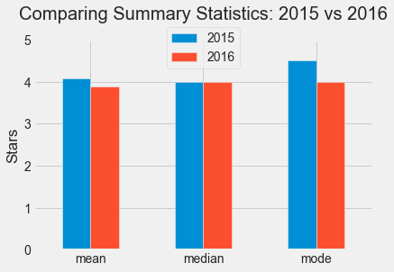
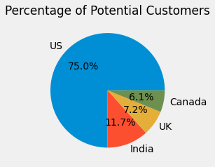

Fandango
Movie Ratings Analysis

In October 2015, a data journalist named Walt Hickey analyzed movie ratings data and found strong evidence
to suggest that Fandango's rating system was biased and dishonest. He published his findings in
this article.
In this project, I used sample statistics and kernel density plots to show that Fandango popular movie ratings
have decreased on average by approximately 5% in 2016, a year after Hickey's report.
Market Analysis
for Targeted Ads

In this project, I anlyze customer survey data for an e-learning company to determine the top two markets for targeted advertisement.
After performing outlier treatment to obtain a representative sample, I suggest three advertising strategies based on the findings from my
analysis along with a dashboard for easy interpretation.
6/49 Lottery
Mobile App Predictions

The purpose if this project is to contribute to the development of a mobile app that aims to help users better estimate their chances of
winning the 6/49 Lottery.
Using historical data from the national 6/49 lottery game in
Canada, I create the logical core of the app and calculate probabilities allowing users to answer questions like:
- What is the probability of winning the big prize if we play 40 different tickets (or any other number)?
- What is the probability of having at least five (or four, or three, or two) winning numbers on a single ticket?
CIA Factbook
SQL Analysis

In this project, I use sqlite3 to query data from the CIA World Factbook
for exploratory data analysis.
This analysis included investigations to discover patterns and to spot anomalies in the dataset.